Show code cell source
import numpy as np
import matplotlib.pyplot as plt
%matplotlib widget
plt.rcParams.update({'font.size': 16})
---------------------------------------------------------------------------
ModuleNotFoundError Traceback (most recent call last)
Cell In[1], line 1
----> 1 import numpy as np
2 import matplotlib.pyplot as plt
4 get_ipython().run_line_magic('matplotlib', 'widget')
ModuleNotFoundError: No module named 'numpy'
1. Overview of Accelerator Magnets#
{kind=link}
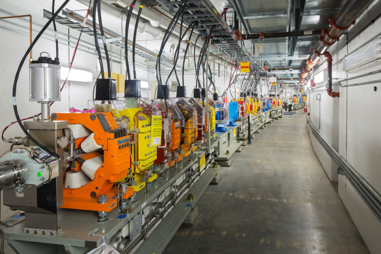
Fig. 1.1 Magnets in NSLSII#
{kind=link}
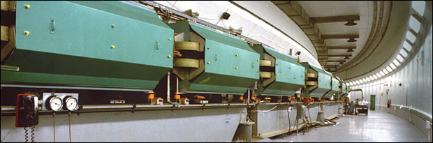
Fig. 1.2 Magnets in AGS#
There are many common type of magnets used accelerators, they are grouped using the order of multi-pole expansion in the vicinity of the center of the beam pipe, where the particles is transported. Here are the list of common type of magnets:
Magnet Types |
Usages |
|---|---|
Dipoles |
Form the Geometry of Accelerator |
Quadrupoles |
Focus/Defocus the beam |
Sextrupole |
Chromatic correction, nonlinear effects |
Octopole |
Damping of the collective effects |
Solenoid |
Focusing for low energy beam |
Correctors |
Steer the beam |
1.1. Magnetic field#
Static magnet used in accelerator is either powered by the DC current in the coil or use permanent magnetic materials. From the Maxwell equations
we vanish the contribution of the charge and the time derivative of the electro-magnetic field and found the magnetic field in the magnet satisfy:
The magnetic field is always divergenceless and can be written as the curl of the vector potential \(\mathbf{B}=\nabla \times \mathbf{A}\). In the free space where the vacuum chamber is installed, the magnetic field’s curl also vanish. The magnetic field can be alternatively express as the gradient of a ‘magnetic scalar potential’ \(\mathbf{B}=-\nabla \phi_M \), which satisfy:
1.2. Transverse field#
When the magnetic field is transverse only, in Cartesian coordinate \(\left(\hat{x},\hat{y},\hat{s}\right)\), we write:
The vector potential only need longitudinal components.
In the mean time, there exist a scalar potential and satisfy:
Therefore we can calculate the two transverse components as:
We can construct a complex function \(f\left(z=x+iy\right)=A_s\left(x,y\right)+i\phi_M\left(x,y\right)\), which satisfy Cauchy–Riemann equations. Therefore, the complex function \(f\) is complex differentiable in the entire sourceless region and can be Taylor expanded.
We use Taylor expansion of \(f\) at the vicinity of the center of magnet as
There are two widely used conventions on the index of the Taylor expansion. The US convention starts with subscript \(n=0\) and the European convention start with \(m=1\).
Then we take the derivative of the complex potential \(f\) with respective to \(z\)
The magnetic field can be expressed as:
Here, \(B_0\) is the main dipole field strength. The \(b_n\) and \(a_n\) are called the \(2(n+1)^{th}\) multipole coefficients in ‘U.S. convention’; while the \(b_m\) and \(a_m\) are called \(2m^{th}\) multipole coefficients in ‘European convention’. The set of \(b\) coefficients are the normal components while the set of \(a\) coefficients are the skew components.
This complex field representation in 2-D plane is named Beth representation.
1.3. Example Magnets#
Here we give the low order transverse magnets as the examples, using the U.S. convention:
1.3.1. Dipoles#
The magnet is named dipole when the dipole coefficient \(b_0\) and/or \(a_0\) are non-zero. The scalar potential reads:
Therefore, a non-zero \(b_0\) gives verticle field. With the normalization factor \(B_0\), usually \(b_0\) is 1. A non-zero \(a_0\) corresponds to a horizontal magnetic field. The contours of the scalar potential are horizontal or vertical lines.
The scew field (\(a_0\ne 0\)) can be made after \(\pi/2\) rotation from normal field (\(b_0\ne 0\))
Show code cell source
fig, (ax1,ax2)=plt.subplots(1,2)
ax1.set_aspect('equal');ax2.set_aspect('equal')
xlist = np.linspace(-5.0, 5.0, 40)
ylist = np.linspace(-5.0, 5.0, 40)
X, Y = np.meshgrid(xlist, ylist)
qdratio1=0.05
qdratio2=0.2
Z1 = (Y)
Z2 = (X)
ax1.set_title('Normal Dipole', )
ax2.set_title('Skew Dipole', )
ax1.set_xlabel(r'$x$')
ax2.set_xlabel(r'$x$')
ax1.set_ylabel(r'$y$')
cp_n =ax1.contour(X, Y, Z1, np.array([-6,-4,-2,2,4,6]))
cp_s =ax2.contour(X, Y, Z2, np.array([-6,-4,-2,2,4,6]))
ax1.quiver(X[::3,::3], Y[::3,::3], (0*Y)[::3,::3], (1+0*X)[::3,::3])
ax2.quiver(X[::3,::3], Y[::3,::3], (1+0*X)[::3,::3], (0*Y)[::3,::3])
ax1.clabel(cp_n, inline=True, fontsize=3)
ax2.clabel(cp_s, inline=True, fontsize=3);
1.3.2. Quadrupoles#
The magnet is named quadrupole when the quad coefficient \(b_1\) and/or \(a_1\) are non-zero. The scalar potential reads:
The contours of the scalar potential for the normal and the skew quadrupole are plotted in the following figure:
Show code cell source
fig, (ax1,ax2)=plt.subplots(1,2)
ax1.set_aspect('equal');ax2.set_aspect('equal')
xlist = np.linspace(-5.0, 5.0, 40)
ylist = np.linspace(-5.0, 5.0, 40)
X, Y = np.meshgrid(xlist, ylist)
Zn = X*Y
Zs = (X*X-Y*Y)/2
ax1.set_title('Normal Quad', )
ax2.set_title('Skew Quad', )
ax1.set_xlabel('x')
ax2.set_xlabel('x')
ax1.set_ylabel('y')
cp_n =ax1.contour(X, Y, Zn, [-6,-4,-2,2,4,6])
cp_s =ax2.contour(X, Y, Zs, [-6,-4,-2,2,4,6])
ax1.quiver(X[::3,::3], Y[::3,::3], Y[::3,::3], X[::3,::3])
ax2.quiver(X[::3,::3], Y[::3,::3], X[::3,::3], -Y[::3,::3])
ax1.clabel(cp_n, inline=True, fontsize=3)
ax2.clabel(cp_s, inline=True, fontsize=3);
The normal quadrupole has the magnetic field as:
while the skew quadrupole has the magnetic field as:
A skew quadrupole can be achieved by rotating \(\pi/4\) from a normal quadrupole
1.3.3. Combined function magnet#
Many cases requires a combination of dipole and quadrupoles, which is a combined function magnet. Let’s only talk about the normal components:
Show code cell source
fig, (ax1,ax2)=plt.subplots(1,2)
ax1.set_aspect('equal');ax2.set_aspect('equal')
xlist = np.linspace(-5.0, 5.0, 40)
ylist = np.linspace(-5.0, 5.0, 40)
X, Y = np.meshgrid(xlist, ylist)
qdratio1=0.05
qdratio2=0.2
Z1 = (Y+qdratio1*X*Y)
Z2 = (Y+qdratio2*X*Y)
ax1.set_title('Weak Quad-component', )
ax2.set_title('Strong Quad-component', )
ax1.set_xlabel('x')
ax2.set_xlabel('x')
ax1.set_ylabel('y')
cp_n =ax1.contour(X, Y, Z1, np.array([-6,-4,-2,2,4,6]))
cp_s =ax2.contour(X, Y, Z2, np.array([-6,-4,-2,2,4,6]))
ax1.quiver(X[::3,::3], Y[::3,::3], (qdratio1*Y)[::3,::3], (1+qdratio1*X)[::3,::3])
ax2.quiver(X[::3,::3], Y[::3,::3], (qdratio2*Y)[::3,::3], (1+qdratio2*X)[::3,::3])
ax1.clabel(cp_n, inline=True, fontsize=3)
ax2.clabel(cp_s, inline=True, fontsize=3);
<a list of 6 text.Text objects>
1.3.4. Sextrupole#
The magnet is named Sextrupole when the sextrupole coefficient \(b_2\) and/or \(a_2\) are non-zero. The scalar potential reads:
The contours of the scalar potential for the normal and the skew sextrupole are plotted in the following figure:
Show code cell source
fig, (ax1,ax2)=plt.subplots(1,2)
ax1.set_aspect('equal');ax2.set_aspect('equal')
xlist = np.linspace(-5.0, 5.0, 40)
ylist = np.linspace(-5.0, 5.0, 40)
X, Y = np.meshgrid(xlist, ylist)
Zn = (3*X*X*Y-Y*Y*Y)/3
Zs = (X*X*X-3*X*Y*Y)/3
ax1.set_title('Normal Sextrupole', )
ax2.set_title('Skew Sextrupole', )
ax1.set_xlabel('x')
ax2.set_xlabel('x')
ax1.set_ylabel('y')
cp_n =ax1.contour(X, Y, Zn, np.array([-6,-4,-2,2,4,6])*3)
cp_s =ax2.contour(X, Y, Zs, np.array([-6,-4,-2,2,4,6])*3)
ax1.quiver(X[::3,::3], Y[::3,::3], (2*X*Y)[::3,::3], (X*X-Y*Y)[::3,::3])
ax2.quiver(X[::3,::3], Y[::3,::3], (X*X-Y*Y)[::3,::3], (-2*X*Y)[::3,::3])
ax1.clabel(cp_n, inline=True, fontsize=3)
ax2.clabel(cp_s, inline=True, fontsize=3);
<a list of 18 text.Text objects>
The normal sextrupole has the magnetic field as:
while the skew Sextrupole has the magnetic field as:
A skew sextrupole can be achieved by rotating \(\pi/6\) from a normal sextrupole
1.4. Magnet with iron core – Iron Dominated Magnet#
To achieve high field, accelerator usually use high permeability material to boost the flux density \(\mathbf{B}\) for the same magnetic field generated by the coil.
The comparision of permability of different materials is shown in the figure (from Wikipedia) below:
{kind=link}
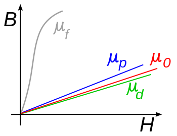
Fig. 1.3 Permeability of materials#
As seen from the above graph, for ferromagnet material has much larger permeability and the permeability is a function of the magnetic field. For example, iron (99.8% pure) may have initial \(\mu_r\) of 150 and can reach maximum of 5000; while the %99.95 pure ion will have initial \(\mu_r\) of 10000 and reach maximum 200000.
{kind=link}
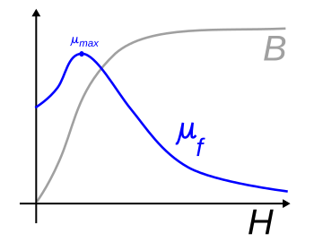
Fig. 1.4 Ferromagnet Permeability#
However some ferromagnet material, like iron, has the effect of saturation. It is a state that the magnetization of the material do not increase as the increase of the external magnetic field. As a result the permeability of the material at saturation is back to \(\mu_0\), the vacuum permeability.
The figure below shows the permeability of ferromagnet material as function of the external magnetic field \(\mathbf{H}\):
Later on, we will demonstrate that the nonlinear behavior of large permeability will have very small impact in the field of magnet in accelerator.
1.4.1. Ampere Turns#
At the edge of the iron core, we can use the Stoke’s theorem (\(\oint \mathbf{H} \cdot d\mathbf{l}=0\)) to easily get the magnetic field is perpendicular to the surface of the iron. The integration loop is shown below:
{kind=link}
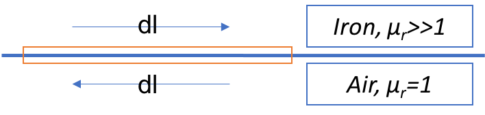
Fig. 1.5 Treatments at edge using Stokes Theorem#
Here we assume the relative permeability of iron is infinite.
We also know that from the magnetic field is everywhere perpendicular to the iso-scalar-potential line of \(\phi_M\). Therefore, ideally, the boundary of the iron core of magnets should be aligned with the iso-scalar-potential line.
1.4.1.1. Ampere Turns in Dipole#
The common layout of the dipole in accelerator is either ‘H-type’ or ‘C-type’, as shown in the following figure:
{kind=link}
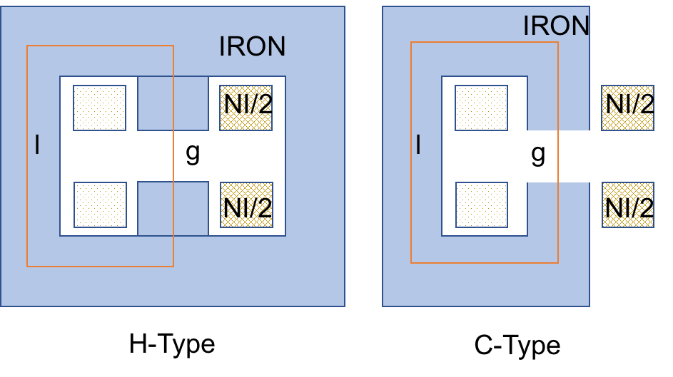
Fig. 1.6 ‘H’ and ‘C’ type dipole#
Apply the Stoke’s theorem again along the red line for either case, we have
Therefore:
1.4.1.2. Ampere Turns in Quadrupole#
{kind=link}
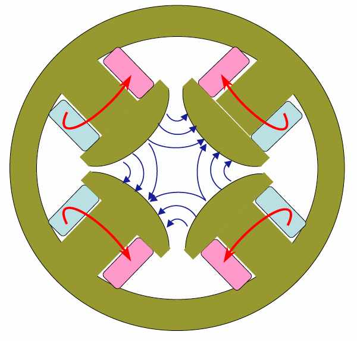
Fig. 1.7 Quadrupole example#
Similar as in Quad, we can choose a triangle pass of the Stoke’s integral, and a circle of radius \(R\) that reaches the edge of the magnet bore, or inscribed circle. So that:
Here the magnetic field has the relation ship of \(B=B_1 r\). The gradient \(B_1=B_0 b_1\) or \(B_1=B_0 a_1\) in the above notation. Therefore the required ampere turn for one pole of the quadrupole gives:
1.4.1.3. Ampere Turns in Sextrupole#
Take the similar steps for sextrupoles, the magnetic field takes the form of \(B=B_2r^2\) along the integral pass to the inscribed circle with radius R, and we have:
The sextrupole strength \(B_2=3B_0 b_2\) or \(B_2=3B_0 a_2\) in the above notation. And the required ampere turn for one pole of the sextrupole gives:
The dipole gap g, and inscribed radius R of multi-pole define the aperture of the accelerator. The drive current, measured in ampere turn for dipole will grow linearly as function of the aperture. The current will grow as function of the power of \(n+1\) of the aperture for order \(n^{th}\) multi-poles.
1.4.2. Hysteresis#
{kind=link}
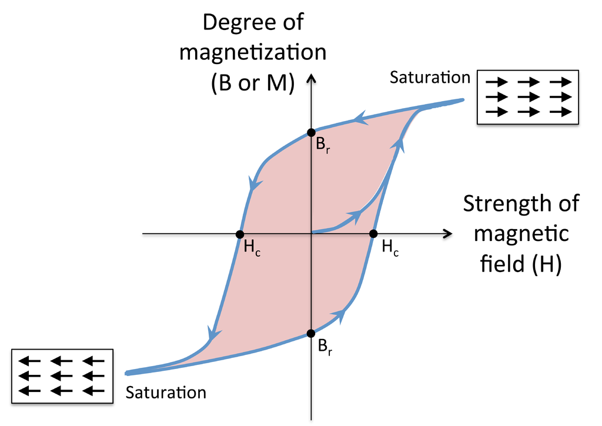
Fig. 1.8 Hysteresis in Magnets#
A unpleasent effect of iron dominated magnet is the magnetic hysteresis effect as shown left:
The atomic dipoles are aligned with the external magnetic field and alignment is partially retained when the external source is decreased. To fight with the ‘memory’ effect, a hysteresis cycle is needed to ensure we alway work at the same side of the hysteresis loop.
1.5. Errors in Magnets#
The error of the magnet rises both in the design of the magnet and the in manufacture stage. There are inevitable factors in the magnet design that causes error:
The permeability of the iron is not infinity and the asymmetric structure of the iron
The surface of the iron can not follow the iso-scalar potential line, edge effect
Nowadays, the magnets are designed by 2-D or 3-D design software using finite element methods. The design tool does not make any above approximations and generate field map in the entire domain.
The manufacture error also contribute to the error of the magnetic field. The field can be measured with Hall probe or other integrated method using conducting wires.
When we have the 2-D field map from simulation or field measurement, the multi-pole coefficients can be determined from the definition of the complex representation. In U.S. convention:
In European convention:
The derivative is taken at the origin of the Taylor expansion. Certainly, the result of such derivative depends on the area of analysis. We only interested in the area that the charge particle can locate, usually limited by the size of the vacuum chamber. We define a circle with radius \(R_0\), named”good field region”, in which the magnet is designed to deliver satisfied field quality.
{kind=link}
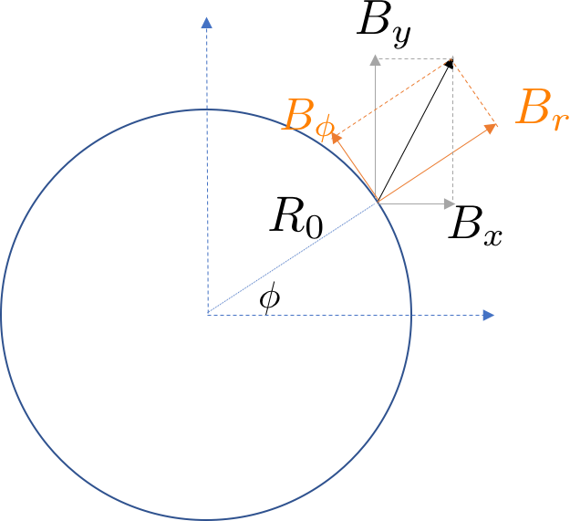
Fig. 1.9 Analysis in magnetic error#
We can get the field on the circle and inside the circle (not necessary). From Eq.(1.24) or (1.26), we can take numerical derivative and get all \(b_n\) and \(a_n\). However, determining the Taylor coefficient, especially high order ones, are noisy. Alternatively, we may rewrite the Beth representation in terms of \(B_r\) and \(B_\phi\) (as shown in above figure),
where \(z\equiv x+iy=re^{i\phi}\). Or, we may seperately write as:
Then we measure the magnetic field along the circle, \(B_r(r=R_0,\phi)\) and \(B_\phi(r=R_0,\phi)\). Take integral \(\int_0^{2\pi}e^{-i(n'+1)\phi}d\phi\) on both side of (1.27):
Therefore, we can get the coefficient in U.S convention by:
Similarly, using European convention gives:
Even for arbitrary field due to design and manufacture errors, the above analysis still hold. We can get the multi-pole coefficient of the errors using the above integrals.
One can prove that the radial and the azimuthal component has the same contribution
1.6. Other type of Magnets#
1.6.1. Coil Dominated Magnet#
For some simple dipole correctors, the wire can be directly planed around the vacuum chamber to provide weak field on the beam. Usually such simple setup cannot produce very precise field.
Similar principle is used in the superconducting magnet, where the current can be pushed to ~10 Kilo Ampere. Many technical challenges have be conquered to reach ~10T level (LHC, 8 Tesla).
{kind=link}
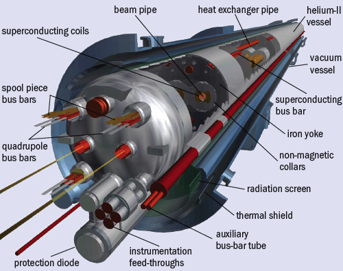
Fig. 1.10 LHC Dipole#
{kind=link}
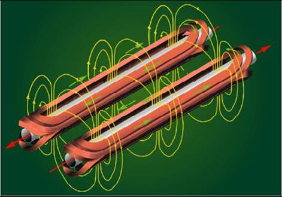
Fig. 1.11 Wiring scheme for LHC dipole#
1.6.2. Permanent Magnet#
{kind=link}
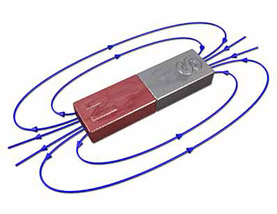
Fig. 1.12 A permanent magnet#
Another group magnet does not involve current and power supplies, instead, uses permanent magetic material as the source to create desire field.
A Halbach array of permanent magnet is a special arrangement to provide field in desire region and cancel the contribution in the rest areas. This can be specially useful in designing a magnet in accelerator.
{kind=link}
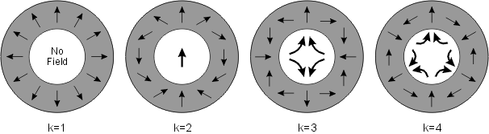
Fig. 1.13 The halhach array#
A recent example of using permanent magnet is the FFAG arc used in the CBETA project (collaborated by BNL and Cornell University). The Halbach array is used to provide both pure quadrupole magnets or the combine function magnet (contains both the dipole and quadrupole field). Some example is retrived from “Halbach Magnets for CBeta” by D. Trbojevic et.al. 2017.
The raw design can be found below. Left is the pure quadrupole, while the right is the combine function magnet that provides the opposite sign of the quadrupole strength.
{kind=link}
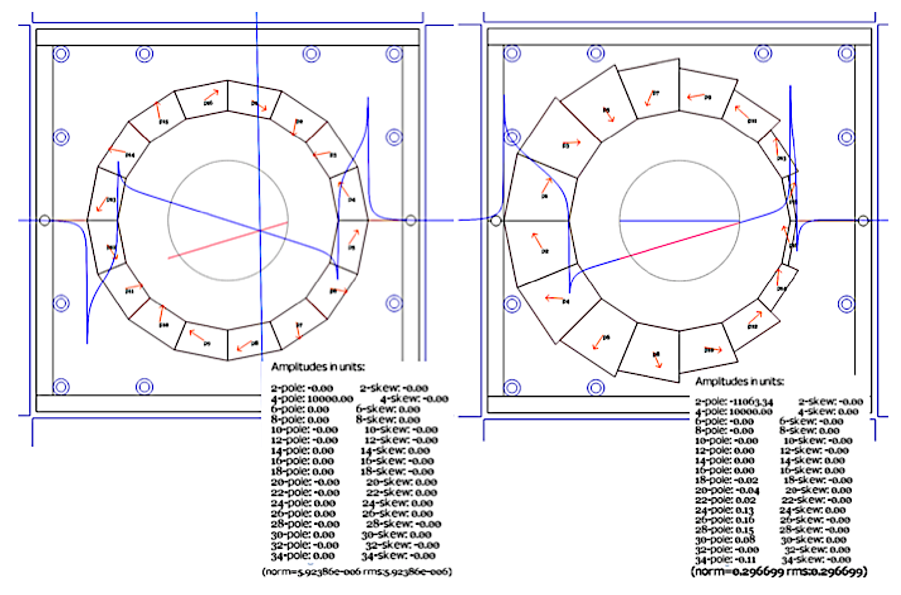
Fig. 1.14 The halhach array application in CBeta#
However, one still need to do fine tuning of the the magnet. Therefore a small coil based corrector is added outside of the halbach design:
{kind=link}
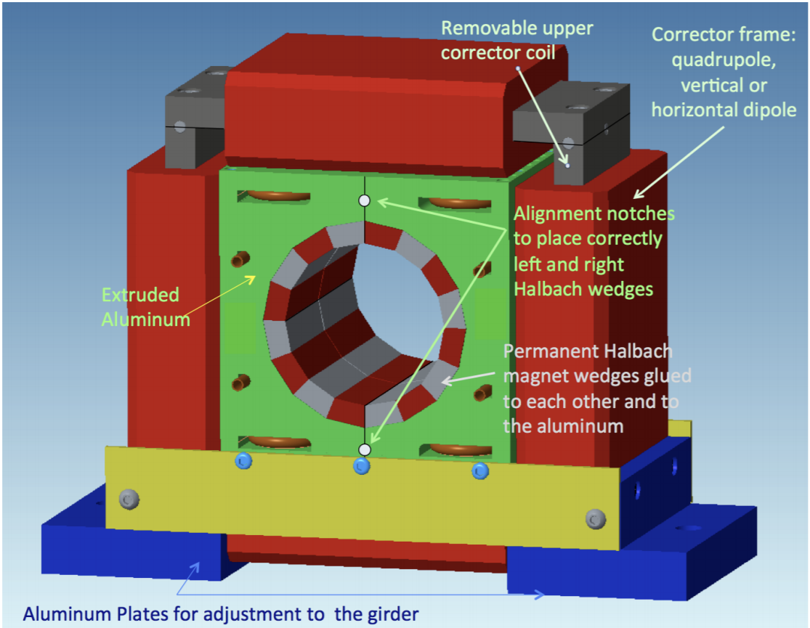
Fig. 1.15 Cbeta magnet ensemble with corrector#
1.7. Introduction to 3D magnets#
At the edge of the magnet, the transverse field has longitudinal dependence.
To satisfy \(\nabla\times B=0\), we need to satisfy:
Therefore we can not assume the the field is transverse only. A non-constant longitudinal magnetic must involve.
1.7.1. Integrated field#
In many applications, we care about the integrated field over the direction of beam, viz. \(z\) direction.
In three dimension, the source-less magnetic field gives:
Then integration over \(z\) gives:
If we define \(\phi_{T,M}=\int_{z_1}^{z_2} \phi_M(x,y,z)dz\), the equation yields:
By choosing the proper integrated region to vanish the right hand side, the analysis for 2-D can be extrapolated to the integrated field.
The integrated strength of the multi-poles is important to characterize the effect to be beam. We may define the field integral of component \(b_n\):
The integral can be used to define a equivalent length of a hard edge model, which has constant field in the range and zero outside:
Show code cell source
fig,ax=plt.subplots()
ax.set_title("Hard edge equivalent")
ax.set_xlabel("longitudinal position[m]")
ax.set_ylabel("Norm. Magnetic field [Arb-unit]")
ax.set_xlim(0,1)
field_size=0.2
slist=np.linspace(0,1,100)
actual_field=np.exp(-slist*slist/2/field_size/field_size)
ax.plot(slist,actual_field, label="Soft edge")
integral=np.sum(actual_field)*(slist[1]-slist[0])
equiv_field=slist<integral
ax.plot(slist,equiv_field,label="Hard edge")
l=ax.legend(loc='best')
To characterize different edge shape, the following second order field integral is useful for the dipole field:
Edge Shapes |
Linear |
Lorentz |
Gaussian |
|---|---|---|---|
\(I_2\) |
0.167 |
0.078 |
0.073 |
Show code cell source
def I2(field, pos):
return np.sum(field*(1-field)*(pos[1]-pos[0]))
fig,ax=plt.subplots()
ax.set_xlabel("longitudinal position[m]")
ax.set_ylabel("Norm. Magnetic field [Arb-unit]")
ax.set_xlim(0,1)
ax.set_ylim(0,1)
field_size=0.2
slist=np.linspace(0,1,100)
actual_field_1=np.exp(-slist*slist/2/field_size/field_size)
ax.plot(slist,actual_field_1, label='Gaussian')
#print("Field shape Gaussian:", I2(actual_field_1,slist))
actual_field_2=2/(1+np.exp(slist*slist/2/field_size/field_size))
ax.plot(slist,actual_field_2, label='Lorentz')
#print("Field shape Lorentz:", I2(actual_field_2,slist))
actual_field_3=1-slist
ax.plot(slist,actual_field_3, label='Linear')
#print("Field shape Linear:", I2(actual_field_3,slist))
l=ax.legend(loc='best')
[1]““Magnetic Properties of Ferromagnetic Materials”, ‘‘Iron’’”. C.R Nave Georgia State University. Retrieved 2013-12-01.